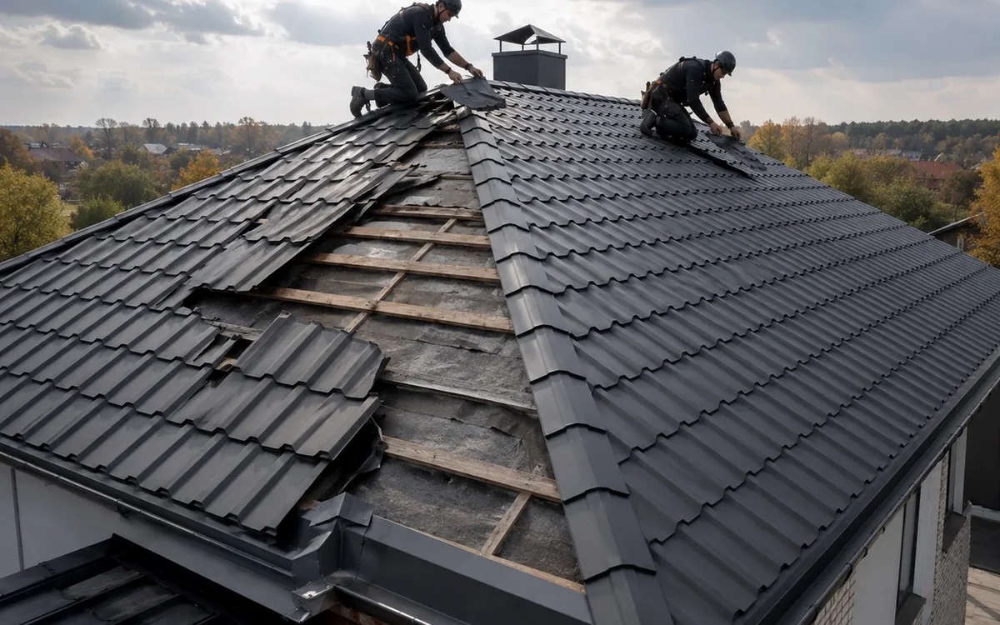

Как оценивают старую крышу перед заменой покрытия, что проверяют в стропилах, обрешетке и карнизных узлах.
С чего начать
Замена старого шифера на современную кровлю начинается с осмотра конструкции, а не с выбора отдельного материала. Важно оценить уклон, состояние основания, направление движения воды, карнизные зоны, проходы через крышу и доступ к месту работ. Такой осмотр помогает понять, какие решения подходят именно для этого объекта.
Что проверяют на объекте
Кровлю оценивают как единую конструкцию. Кроме покрытия проверяют обрешётку, мембраны, утепление, вентиляционные зазоры, конёк, ендовы, примыкания и водосток. Ошибка в одном узле часто влияет на соседние участки.
- форма и уклон крыши
- состояние древесины и основания
- вентиляция и защита от влаги
- примыкания, карнизы и конек
- водоотведение и доступ для обслуживания
Какие решения применяют
Решение подбирают под тип здания, геометрию крыши и режим эксплуатации. Для частного дома часто важны тишина, аккуратный вид и стабильная работа подкровельного пространства. Для хозяйственных или коммерческих объектов большее значение имеют длина скатов, крепления, доступ к оборудованию и водоотведение.
Ошибки, которых лучше избегать
Материал сам по себе не решает задачу. Результат зависит от основания, мембран, вентиляции, крепления и качества узлов.
Что подготовить перед работами
Для первичной оценки нужны фотографии крыши с нескольких сторон, доступ к чердаку или техническому пространству и сведения о предыдущих работах. Карнизы и водостоки также стоит осмотреть.
Частые вопросы
Можно ли принять решение только по фото?
Фото подходят для первичного разбора. Для точного решения нужно проверить основание, примыкания и подкровельные слои.
Что важнее, материал или монтаж?
Даже подходящее покрытие требует правильного основания, вентиляции и аккуратно выполненных узлов.